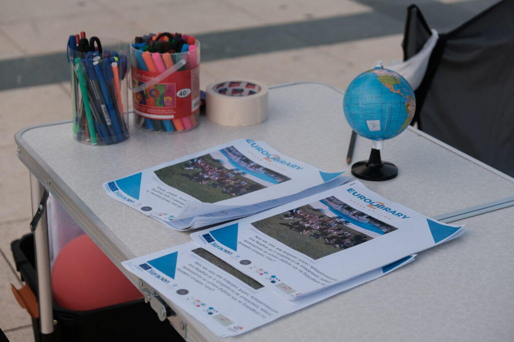

What is a Human Library?
In Eurolibrary, the Human Library is the engine of every mobility. Participants were trained to share personal stories about mental health, eco living, migration, healthy lifestyles and entrepreneurship, and shared them with local communities across Europe in a safe, respectful space.

You borrow a person, not a book
You walk into a library. Instead of borrowing a book, you borrow a person. They tell you a story, their story: raw, real and often misunderstood.
Welcome to the Human Library, where people are the books and every conversation is a chance to question bias, break stereotypes and build connection.
The Human Library is an innovative, interactive method that promotes dialogue, reduces prejudice and builds understanding. Participants "borrow" Human Books, people who share personal stories of overcoming adversity, embracing diversity or living unique experiences.
These one to one or small group conversations challenge stereotypes and make room for authentic, empathetic exchange.
- Communities gain insight into the experiences of marginalised or underrepresented young people.
- Locals become "readers" and talk in real time with a diverse group of young "books".
- Participants build confidence, empathy and storytelling skills.
"It is not about agreeing. It is about understanding."
Five reasons we use it
Challenge prejudice
Through personal storytelling.
Stay true
Inspire young people to hold on to their values and question social norms.
Honest dialogue
Create safe spaces to talk openly.
Real listening
Help us listen without assumptions.
Connection
Bring together people from different cultures, experiences and walks of life.
The Human Library in numbers
Sessions took place on trains, ferries, in museums, cafés and public spaces, and in local schools.
How a session works
We ran four Human Library events in each of the five chapters.
Pick a title
A list of human books, each with a title that represents their story and a short summary.
Borrow a book
Readers choose a book from the catalogue and borrow them for a timed conversation.
Respect first
Mutual respect, open mindedness and confidentiality. Readers are encouraged to ask honest questions, and books can share or withhold details as they wish.

Where we used it
From Bulgarian trains to Greek islands, in town squares and in schools.
See the five chapters